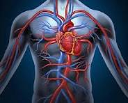
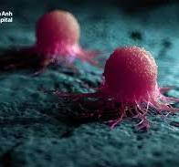
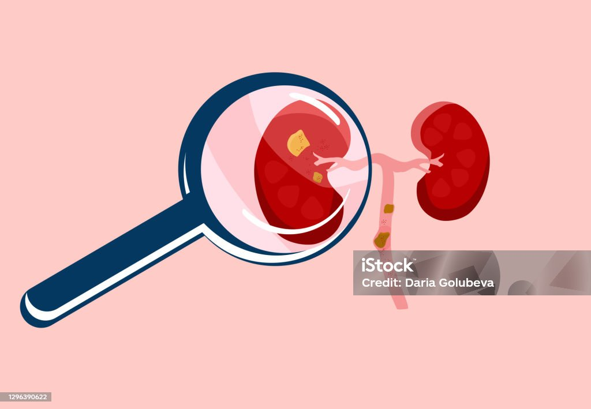

Chào mừng đến với cổng thông tin sức khỏe
Giới thiệu:Tôi là Đinh Đức Quang, học sinh lớp 11A2 Toán trường THPT Chuyên KHTN, tôi tạo ra trang này với mục đích chia sẻ những hiểu biết của mình về một số loại bệnh tật mà nhiều người mắc phải và cách để phòng chống hoặc điều trị tối ưu nhất dựa trên những dữ liệu mà tôi tổng hợp được nếu có sai sót gì thì mong rằng các bạn có thể thông cảm vì tôi làm trang này khá vội. Hi vọng những điều này sẽ bổ ích với bạn
I.Bệnh tim mạch
Theo tổ chức Y tế Thế giới năm 2019, tử vong do bệnh tim mạch chiếm đến 39,5% và gần 19,4 triệu người chết mỗi năm vì bệnh tim mạch và ở Việt Nam, con số này lên đến 200000 người mỗi năm

Để tìm hiểu thông tin chi tiết hơn, xin vui lòng tuy cập vào: Tim mạch
II.Bệnh ung thư
Đây là một căn bệnh vô cùng quái ác và đến giờ vẫn là vấn đề gây đau đầu cho nền y học hiện đại ngày nay bởi nó rất khó bị phát hiện trong những giai đoạn đầu và gần như vô phương cứu chữa

Theo GLOBOCAN trên thế giới có khoảng 19.3 triệu ca ung thư mới và gần 10.0 triệu ca tử vong vào năm 2020
Tại Việt Nam, vào năm 2020 được báo cáo là có khoảng 182 nghìn ca ung thư mới, xếp thứ 91/185 và khoảng 122 nghìn ca, xếp thứ 50/185 về tỷ suất tử vong trên 100.000 người và vẫn đang tiếp tục tăng với tỉ lệ cao.
Để tìm hiểu thông tin chi tiết hơn, xin vui lòng truy cập vào: Ung thư
III.Bệnh lý về thận
Các bệnh lý về thận thường ảnh hưởng trực tiếp đến khả năng lọc và loại bỏ chất thải của thận, gây ra nhiều biến chứng nguy hiểm cho sức khỏe nếu không được điều trị kịp thời.

Theo thống kê trên thế giới, Khoảng 10% dân số thế giới mắc bệnh lý về thận và mỗi năm có 5-10 triệu người tử vong do căn bệnh này. Theo dự đoán, bệnh thận mạn sẽ trở thành nguyên nhân gây tử vong cao thứ 5 trên toàn cầu vào năm 2040. Bệnh có thể diễn biến âm thầm và thường chỉ được phát hiện ở giai đoạn muộn, khi chức năng thận đã suy giảm nghiêm trọng
Tại Việt Nam, ước tính hơn 10 triệu người mắc bệnh thận, có khoảng 8000 ca mới mỗi năm, chiếm khoảng 10,1% dân số, và tử vong do bệnh thận đứng thứ 8 trong các nguyên nhân gây tử vong hàng đầu.
Để tìm hiểu thông tin chi tiết hơn, xin vui lòng truy cập vào: Bệnh lý về thận